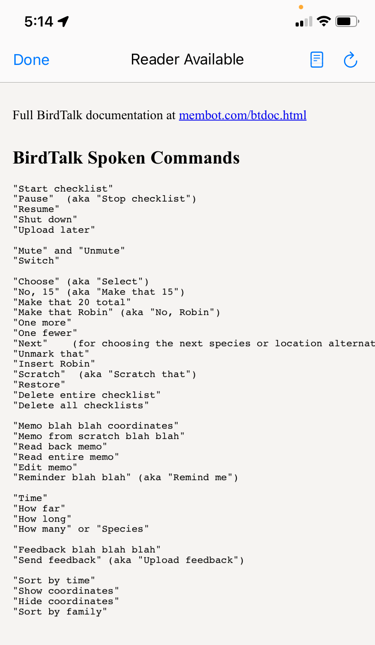

Getting Started with BirdTalk
This guide will help you start using BirdTalk effectively. It begins with a quick reference of the most useful features and concepts, then tells you where to go to learn more.
Starting Up

The First Screen
When you first open BirdTalk, you'll see the main screen with a list of checklists, if you have any.
- Use pinch-and-zoom to adjust text size for better visibility.
Audio Check
Before starting your birding session, test that BirdTalk can hear you.
- If "Start" is at the top left, tap that to turn on the recognizer.
- BirdTalk uses the phone's internal mic and speaker by default, or the optional Bluetooth headset (see Setup for headset details).
- Say
Timeto verify BirdTalk hears and responds with the time. - For more audio troubleshooting, see the FAQ
BirdTalk is Listening
- When BirdTalk is started, it is listening to everything you say for commands it understands, and ignoring everything else.
- You can talk freely to others and BirdTalk ignores it.
- Pause for a second before and after speaking a BirdTalk command so the command doesn't blend into what you're saying to others.
- Whenever BirdTalk understands your command, it will speak back to let you know exactly what it is doing. For instance when you say
Robinit will say back "American Robin" so you konw exactly which species it is adding to your checklist. - To turn off BirdTalk's listening, tap the "Stop" button at upper left, or say
Shut down.
Summary of the Common Commands
Here is a quick list of the most common commands, that you'll use in most checklists:
- Start by saying
Start checklist - Add a bird sighting, for example say
Scrub Jay - Correct a mistaken entry by saying
No, Bluebird - Add bird with a count by saying
2 Robins - Remove a mistaken entry by saying
Scratch - Stop by saying
Stop checklist
These are covered in more detail below.
Checklist Concepts
- Once a checklist is started, successive bird entries are added as they are spoken.
- Successive entries of the same species will be totaled when the checklist is uploaded to eBird.
- You can tap the screen (or use the
choosecommand) to select particular entries so you can thenscratchor otherwise modify them. - When the checklist is stopped, new bird entries can no longer be added.
- It is possible to modify entries in a stopped checklist. We'll cover this later in Command Reference.
Details of the Common Commands

Starting a Checklist
Say Start checklist and BirdTalk will find your location and suggest the nearest eBird hotspot.
- BirdTalk reads back the chosen hotspot
- If you prefer a different hotspot, tap the desired hotspot on the screen, or use the
Nextcomamnd. - Then say
Share with oneif you are birding with another person, so the eBird checklist will have the right count.

Recording Birds
Use the basic format: Say [Number] [Species Name]. For example:
- Say
Three mockingbirds - Say
One robin - Say
Scratch thatto remove the last entry - Say
Two cal quail(shorthand for California Quail) - Say
Red-tailed Hawk. If you leave out the number, it just adds one.
Other Essential Commands
- To change the last entry: Say
No, three - To change species: Say
No, towhee - To stop the checklist when all done: Say
Stop checklist - See Uploading Checklists to send the checklist to eBird.
That's everything you need to use BirdTalk successfully!
Learning Other Commands

Tap the ? button (at the upper left of the main screen) to see a summary of BirdTalk's verbal commands.
The most useful other commands are:
- To check a count: Say
How many robins - To add one: Say
One more - To subtract one: Say
One fewer - To add a comment to a bird entry: Say
Memo flycatching at the lake shore - To check how many species in the checklist so far, say
How many species
Using Shorthand Names
-
For Yellow-rumped Warbler:
- Say
Yellow Rumpor justRump
- Say
-
For Pacific-slope Flycatcher:
- Say
Slope
- Say
Next: See Uploading Checklists.
Or: See Command Reference for a comprehensive list of the verbal commands.